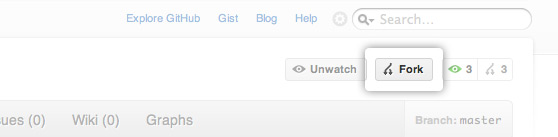

Note
Prerequisites: You need to install git before following these instructions. You should also familiarize yourself with the basic use and work flow model of git before following these instructions. The folks over at github put together a good introduction to git that you can use to get started with git.
StarCluster’s source code is stored on github.com. It is preferred that you use github.com to submit patches and enhancements via pull requests. The first step is to sign up for a github account.
Once you have a github account the next step is to fork the StarCluster github repository. To do this you must first login to github and then navigate to the StarCluster repository. Once there click on the Fork button towards the top right of the project page:

This will create your own copy of the StarCluster repository under your github account that you can modify and commit to. Having your own copy allows you to work on bug fixes, docs, new features, etc. without needing special commit access to the main StarCluster repository.
When developing a Python project it’s useful to work inside an isolated Python environment that lives inside your $HOME folder. This helps to avoid dependency version mismatches between projects and also removes the need to obtain root privileges to install Python modules/packages for development.
Fortunately there exists a couple of projects that make creating and managing isolated Python environments quick and easy:
To get started you first need to install and configure virtualenv and virtualenvwrapper:
Warning
You need root access to run the sudo commands below.
$ sudo easy_install virtualenv
$ sudo easy_install virtualenvwrapper
$ mkdir $HOME/.virtualenvs
$ echo "source /usr/local/bin/virtualenvwrapper.sh" >> $HOME/.bashrc
If you’re using zsh then the last line should be changed to:
$ echo "source /usr/local/bin/virtualenvwrapper.sh" >> $HOME/.zshrc
Running these commands will install both virtualenv and virtualenvwrapper and configure virtualenvwrapper to use $HOME/.virtualenvs as the top-level virtual environment directory where all virtual environments are installed.
At this point you will either need to close your current shell and launch a new shell or re-source your shell’s rc file:
$ source $HOME/.bashrc
This will reload your shell’s configuration file and configure virtualenvwrapper. The next step is to create a new virtual environment called starcluster and change into that virtual environment:
$ mkvirtualenv --clear --no-site-packages --distribute starcluster
(starcluster)$ echo $PATH
/home/user/.virtualenvs/starcluster/bin:/usr/local/bin:/usr/bin:/bin:/opt/bin
Running this command will create a new folder $HOME/.virtualenvs/starcluster containing your new isolated Python environment for StarCluster. This command will also modify your current shell’s environment to work with the StarCluster virtual environment. As you can see from the echo $PATH command above your PATH environment variable has been modified to include the virtual environment’s bin directory at the front of the path. This means when you type python or other Python-related commands (e.g. easy_install, pip, etc.) you will be using the virtual environment’s isolated Python installation.
To see a list of your virtual environments:
$ workon
starcluster
To activate (or enter) a virtual environment:
$ workon starcluster
(starcluster)$ cdvirtualenv
(starcluster)$ pwd
/home/user/.virtualenvs/starcluster
(starcluster)$ ls
bin build include lib lib64 man share
To de-activate (or leave) a virtual environment:
(starcluster)$ deactivate
$ echo $PATH
/usr/local/bin:/usr/bin:/bin:/opt/bin
Installing packages within your virtual environment is the same as outside the virtual environment except you don’t need root privileges. You can use either easy_install or pip to install Python packages/modules. Since IPython is required to use StarCluster’s development shell let’s install IPython now to test this out:
(starcluster)$ pip install ipython
This will install IPython within the virtual environment. You can verify this using the following command:
(starcluster)$ which ipython
/home/user/.virtualenvs/starcluster/bin/ipython
Now that you have a working virtual environment for StarCluster it’s time to check out your fork of StarCluster:
Note
Replace <user> in the git clone command below with your github username.
$ workon starcluster
(starcluster)$ cdvirtualenv
(starcluster)$ git clone git@github.com:<user>/StarCluster.git starcluster
The git clone command above will checkout StarCluster’s source files to $HOME/.virtualenvs/starcluster/starcluster. The next step is to configure StarCluster’s Python source for development. To do this run the following command:
$ workon starcluster
(starcluster)$ cd $VIRTUAL_ENV/starcluster
(starcluster)$ python setup.py develop
The python setup.py develop command will install StarCluster into the virtual environment’s site-packages in such a way that the sources are linked rather than copied to the site-packages directory.
Note
This has the benefit that as soon as a change is made in the StarCluster source files the changes will show up immediately in the virtual environment’s site-packages directory. If you were to use python setup.py install you would instead need to re-install StarCluster each time you made a change for the changes to become active in the virtual environment’s Python installation.
Before committing any code please be sure to run the check.py script in the root of your StarCluster git repository. This script runs pep8 and pyflakes on all source files and outputs any errors it finds related to pep8 formatting, syntax, import errors, undefined variables, etc. Please fix any errors reported before committing.
$ cd $STARCLUSTER_REPO
$ pip install pep8
$ pip install pyflakes
$ ./check.py
>>> Running pyflakes...
>>> Running pep8...
>>> Clean!
You can and should also set up a git hook to do this automatically prior to every commit:
$ cd $STARCLUSTER_REPO
$ ln -s $PWD/git-hooks/pre-commit $PWD/.git/hooks/pre-commit
Now whenever you run git commit the check.py script will check the files to be committed for errors, e.g.:
$ git commit
>>> Running pyflakes...
starcluster/awsutils.py:333: undefined name 'blah'
ERROR: pyflakes failed on some source files
ERROR: please fix the errors and re-run this script
Before submitting a pull request please make sure that your changes pass StarCluster’s current tests. All of the tests run locally and do not require an AWS/EC2 account. To run the tests simply install nose and then run nosetests:
$ pip install nose
$ cd $STARCLUSTER_REPO
$ nosetests
..................................................
----------------------------------------------------------------------
Ran 50 tests in 18.222s
OK
If you get an OK at the end all is well. Otherwise your changes have introduced errors that need to be fixed before submitting a PR.
Once you’ve finished fixing bugs or adding features you’re now ready to submit a pull request so that the changes can be merged upstream and be included in the next stable release.